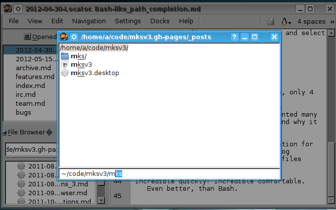

Locator
I just finished functionality, which I was missing for many years.Could you please stop reading this text for few seconds and think, why all this hardcore linuxoids (like me, and probably you;) ) love console and do not want to use GUI software.I guess I know one of the 2 popular answers:
- It always quicker to type a command than click buttons and dialogs or remember a lot of complex shortcuts.
- powerful Tab completion makes typing commands even more effective. With it you can navigate in file system really quickly. Much quicker, than with GUI.
Tab completion
You type part of the word, press Tab - and your shell completes the word. This behaviour is similar to standard File open dialog, which you usually see, when press Ctrl+O But, what is wrong with GUI dialogs and completers such as QCompleter - if you have more than one variant, you need more time to select desired one.
Let's imagine you have files:
- long-the-same-path-1.txt
- long-the-same-path-2.txt
- long-the-same-path-3.txt
- long-the-same-path-4.txt
- Xong-the-same-path-5.txt
and want to open
long-the-same-path-4.txt
With GUI file dialog you would:
- Press1
- Either
- click a variant with mouse
- move you fingers to Up/Down keys and select
- press Tab 3 times for selecting long-the-same-path-4.txt
Console shell completer:
- Type l
No mouse, no moving fingers to Up/Down, only 4 key pressing. Console allows you to open file much quicker! Tab completion was invented many years ago. I really can't understand why it is not widelly used on GUI.
GUI sucks, but I decided to fix this situaition in enki. I just added Locator dialog (Ctrl+L). It has:
- Interface for textual commands
- Tab completion for path
Now you can open files incredible quickly. It is even better, than Bash
Currently Locator supports 3 commands:
- Open file
- Save file as
- Go to line number
but I added API for it, and plugins can add own commands. So, Locator functionality will grow.
